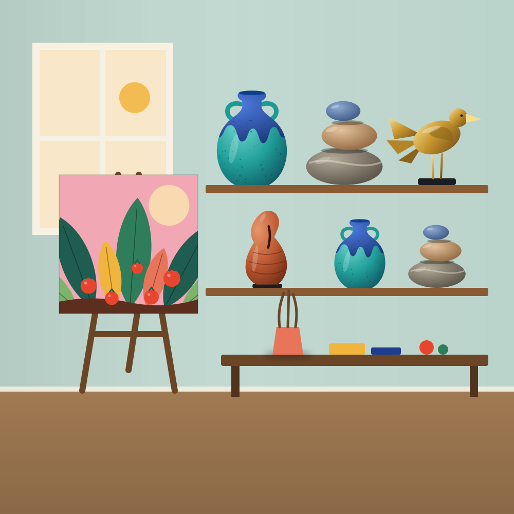

Feito à mão, uma peça de cada vez

Aqui cada obra nasce no ateliê, devagar, e sai de lá assinada. Os quadros são pintados em tinta acrílica sobre tela; as esculturas são modeladas em argila e cerâmica ou trabalhadas em metal.
Não existe produção em série. A maioria das peças é única e, quando uma é vendida, ela não volta para a loja. Algumas esculturas saem em edições limitadas, numeradas à mão.
Se nenhuma das obras disponíveis combinar com o seu espaço, é possível encomendar uma peça nova, no tamanho e nas cores que você imaginar.
Falar sobre uma encomendaDo desenho à caixa de envio
Desenho e cor
Tudo começa em esboços. As cores são escolhidas antes de a primeira pincelada ou de o primeiro pedaço de argila encostar na mesa.
Pintura e modelagem
Os quadros são pintados em camadas, uma de cada vez. As esculturas são modeladas, secas e queimadas, e só então esmaltadas ou polidas.
Assinatura e embalagem
Cada obra recebe assinatura e certificado de autenticidade, e viaja em caixa própria, com proteção nos cantos e seguro.
Cuidados com a sua obra
Quadros. Pendure longe de sol direto e de umidade. Tire o pó com um pano seco e macio. Não use produtos de limpeza.
Cerâmica e argila. Limpe com um pano levemente úmido e evite quedas e choques. As peças são decorativas e não devem ir à lava-louças.
Metal. Para manter o brilho, use um pano seco e macio. Evite lugares com muita umidade.
Como funciona a compra?
Você escolhe as obras, envia o pedido pelo WhatsApp e a artista confirma a disponibilidade, calcula o frete e combina o pagamento por Pix ou por link de cartão. Como as peças são únicas, a reserva só vale depois dessa confirmação.
Como a obra é enviada?
Em caixa própria para arte, com proteção nos cantos e nas superfícies, e seguro contra extravio e danos. Você recebe o código de rastreio assim que o pacote sai do ateliê.
Posso devolver a obra?
Sim. Pelo Código de Defesa do Consumidor, você tem 7 dias a partir do recebimento para desistir de uma compra feita pela internet. Basta avisar a artista; a obra precisa voltar nas mesmas condições em que chegou.
Posso encomendar uma obra sob medida?
Pode. Conte o tamanho, as cores e o espaço onde a obra vai ficar. A artista responde com uma proposta de valor e de prazo.
A obra vem com certificado de autenticidade?
Sim. Todas as obras saem assinadas e acompanhadas de certificado de autenticidade. Nas edições limitadas, o certificado traz o número do exemplar.
Posso ver a obra pessoalmente?
Pode, com hora marcada no ateliê. Fale com a artista pelo WhatsApp para combinar.